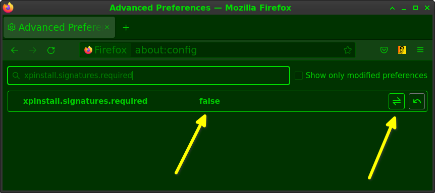
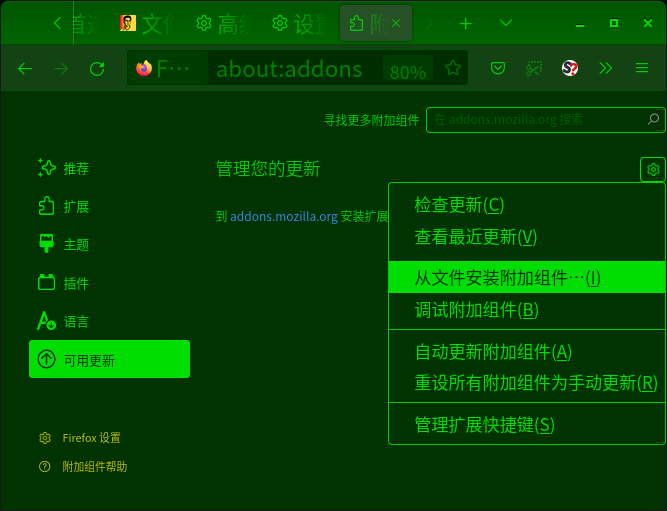

驿窗零蓝模式(ZBLM)
(ZBLM: Zero Blue Light Mode)
 驿窗零蓝效果展示对比
驿窗零蓝效果展示对比
为了展示驿窗零蓝效果，驿窗项目网站已经整体改版为驿窗零蓝模式，您既然已经到了这里，那么不妨在这个网站上随意看一看，体会一下完全去除蓝光后是什么效果。不过，在随意浏览本站之前，可以先看一眼下面这张截图，截图是当前页面改版前有蓝光的效果：
点击可查看大图； Alt+← 返回
{kind=link}
驿窗零蓝模式(ZBLM)是一个配色方案，主要应用于软件界面主题(或者app界面主题，或者UI主题)，是驿窗项目设计的屏幕护眼方案。方案特点是完全去除蓝光，以帮助用户缓解眼部疲劳，达到更好保护眼睛的效果。当下的电脑、手机及平板等彩色屏幕上基本都可以应用驿窗零蓝模式。
具体实现上，驿窗零蓝模式以手机输入法及电脑网页为例进行展示，您可以直接体验驿窗零蓝模式的实际效果。
本文涉及的技术实现均使用开源源代码方案，并附开源协议。
 驿窗注：直接上手
驿窗注：直接上手
如果您对理论和技术细节不感兴趣，只关心怎么安装和使用，请直接阅读直接上手小节。
- 文档主目录：
设计目的：驿窗零蓝模式尝试解决什么问题
理论基础：驿窗零蓝模式设计的原理分析
直接上手：介绍手机输入法如何实现驿窗零蓝主题，不涉及技术原理与背景
同文输入法(trime)的一些操作提示
自定义同文输入法主题界面的配色
驿窗零蓝色板
驿窗绿色板
如何去除现有图片的蓝光和红光
驿窗零蓝.trime.yaml 文件相关参数及对应键位图
驿窗零蓝模式已知问题及应对
电脑上使用驿窗零蓝模式示例
致谢
版权声明
1. 设计目的：驿窗零蓝模式尝试解决什么问题
都说蓝光伤眼，驿窗项目就尝试设计一个彻底没有蓝光的软件界面方案，让您不再有蓝光伤眼的担心，这个方案就是驿窗零蓝(ZBLM)。
本文后面会以手机输入法为例，一步一步向您展示如何使用没有蓝光的驿窗零蓝模式护眼方案。并且，本文还向您介绍在电脑上如何对Firefox浏览器应用驿窗零蓝护眼方案。
特殊视力人群也需要防止蓝光对眼睛的伤害，所以，在设计手机输入法的零蓝模式主题时，同时也设计了供色弱及白内障人群使用的驿窗零蓝护眼主题方案。
如果您的手机输入法在使用驿窗零蓝模式主题后，偶尔能感觉到眼部有放松的感觉，那么恭喜你，驿窗零蓝模式主题非常适合你，建议您多使用驿窗零蓝模式主题，以尽可能多地缓解眼部疲劳，让眼睛更舒适更健康。并且，如果有条件，不仅手机输入法，在使用其它app或者电脑软件时，最好也参考驿窗零蓝模式对软件的界面进行调整，以达到更全面和更广泛的护眼效果。
本文档包含了手机输入法涉及的驿窗零蓝模式相关的全部内容，提供手机输入法的主题文件(驿窗零蓝.trime.yaml)及相关文件下载链接，也提供Firefox浏览器扩展下载链接，您可以直接下载使用。如果需要，您也可以根据本文档对手机输入法主题文件(驿窗零蓝.trime.yaml)进行进一步的调整和修改，让手机输入法界面在适合自己的同时更加个性化。
我的颜色我做主！
2. 理论基础：驿窗零蓝模式主题设计的理论基础
如果想让屏幕彻底没有蓝光，简单看就只有两种方法：一是让屏幕不发出蓝光，二是让屏幕发出的蓝光不能照射到眼睛里。驿窗零蓝模式选择了前者，即让屏幕不发出蓝光。没有蓝光，就不用担心蓝光伤眼。
输入法是必不可少的手机app，驿窗对手机输入法界面的配色进行调整，使屏幕的输入法部分没有蓝光发出，从而达到零蓝光护眼的目的：
手机屏幕主要使用色光三原色原理：红光，绿光，蓝光，即RGB。其中蓝光对人眼伤害相对红光和绿光要更大一些。所以，减少或去除蓝光对眼睛的健康更有利。
环境光不变的情况下，屏幕发出的光越少，眼睛被照射的光也就越少，人眼的感觉就越舒服。
环境光不变的情况下，屏幕发出的光量如果太少，会导致人眼需要更努力更使劲才能看清屏幕上的内容，这种情况反而让人眼感觉更累，是过犹不及。
- 基于上面的推论，驿窗零蓝模式在设计时主要考虑三方面内容：
让屏幕不发射蓝光；
适量减少红光和绿光；
背景色尽量避免使用黑色。
对比一下现在市面上手机自带的防蓝光护眼功能。通常手机打开这个功能以后，屏幕原本白色的地方都会变得有点发黄，这是因为白光中包含的蓝光被削弱了：当把白光中的蓝光减少一部分之后，原本的白光就会显得偏黄。而驿窗零蓝模式的原理，就是把输入法界面中蓝光全部去除，并且把红光也适量去除，所以结果就是：手机屏幕的输入法界面部分以绿光为主，不发射蓝光，少量发射红光。
有一点需要注意，就是一旦屏幕颜色中有白色或灰色出现，那么通常就一定会有蓝光发出。因为白色光里面是包含蓝光的，灰色光里面同样包括蓝光。所以，驿窗零蓝模式不会使用白色和灰色，包括浅灰色或者深灰色。其它颜色，比如品红色，也是包含蓝光的。具体哪些颜色不包含蓝光，请参考本文后面的内容。
根据以上原理，驿窗零蓝模式的手机输入法主题提供了五种配色方案供选择，分别为：
① 驿窗零蓝1-最暗调② 驿窗零蓝2-中暗调③ 驿窗零蓝3-中亮调④ 驿窗零蓝4-最亮调⑤ 驿窗零蓝5-高反差
其中，①-④供常规情况使用，分别对应不同的光环境和主观感觉；⑤供色弱及白内障人群使用，不区分光环境；默认为②。
例如，在正午室外直射日光很强的环境中，应该选择对比度较强的“驿窗零蓝4-最亮调”方案；而在夜里安静的卧室中，环境光相对较暗，那么应该选择亮度更低的“驿窗零蓝1-最暗调”方案；而平时则可以使用默认的“驿窗零蓝2-中暗调”方案。(同文手机输入法切换配色方案非常方便，具体切换方法请参考 配色方案切换)
好了，回顾一下驿窗零蓝模式的原理，很简单，就是让屏幕不发射蓝光，并尽量少发射红光，以绿色为主。没有蓝光，就不用担心蓝光伤害。
3. 直接上手
- 本节内容指导您在同文手机输入法上实现驿窗零蓝模式主题效果：
- 3.1. 下载并安装同文输入法(trime)；3.2. 下载驿窗零蓝zip压缩包并解压到手机根目录；3.3. 设置同文输入法(trime)；3.4. 同文输入法设置成驿窗零蓝主题；3.5. 驿窗零蓝配色之间切换；3.6. 苹果设备暂未提供操作步骤。
3.1 下载并安装同文输入法(trime)
通常情况下，您的手机应用商店中应该没有同文输入法。所以，您需要先在手机上安装F-Droid，然后通过F-Droid这个app来安装同文输入法(trime)。
 驿窗注：F-Droid是啥
驿窗注：F-Droid是啥
F-Droid是一种安卓手机应用商店，用户可以通过它来安装手机APP，只不过它提供的应用都是FOSS应用，即自由和开源的应用。
- F-Droid下载地址：
同文输入法(trime)安装好以后先不要打开，因为打开之前我们需要先下载一些配置文件，具体操作在下面的3.2节中有详细说明。
3.2. 下载驿窗零蓝zip压缩包并解压到手机根目录
- 您可以从下面的地址下载驿窗零蓝压缩包：
下载得到的是一个zblm.zip文件，解压即可得到rime目录，目录中有驿窗零蓝.trime.yaml文件及其它文件，这些文件就是同文输入法配置文件。把包含这些文件的rime目录整体拷贝到手机根目录即可。
驿窗注：手机上的根目录在哪
rime目录在手机上的位置，应该是内部存储设备 > rime。
其中，内部存储设备就表示手机根目录，有些手机不叫内部存储设备，直接就叫手机，或者叫手机存储，或者其它名称。根目录中通常可以看到有Download目录和DCIM目录。
如果您无法确定手机根目录的位置，可以通过F-Droid安装Simple File Manager Pro这个工具，中文名称是简单文件管理 pro，打开它就能看到内部存储器，这个内部存储器就是根目录了。
Simple File Manager Pro的安全性无法担保，请斟酌使用。
有一点要注意，如果您的手机上已经存在rime目录，那么这个目录中大概率会有一个trime.yaml文件，这个文件不要保留，然后确保驿窗零蓝.trime.yaml这个文件一定在rime目录中，之后按下面的介绍执行配色方案切换，再调用输入法就能看到界面的效果了。
3.3. 设置同文输入法(trime)
同文输入法安装好，且已经把下载并解压得到的rime目录拷贝到手机根目录后，请打开同文输入法并按提示进行设置。基本上，输入法需要的权限都放行即可。
设置过程用文字描述不太形象，请参考下面的视频：
设置同文输入法
上面是针对同文输入法本身的设置方法，到这里，同文输入法已经可以使用，但还没有应用驿窗零蓝主题。如果想使用驿窗零蓝主题，还需要对同文输入法的主题进行修改，方法请参考下面的3.4节。
3.5. 驿窗零蓝配色之间切换
驿窗零蓝提供五种配色方案供不同情况下使用，配色方案切换方法如下：
配色方案切换：
打开同文输入法 app ；
选择键盘外观；
选择主题；
选择驿窗零蓝，点击确定；(一定要点一下，相当于重新激活)
选择配色；
选择需要的驿窗零蓝模式方案，比如驿窗零蓝2：中暗调，点击确定；
结束，输入法新的颜色效果已经生效了，测试下看看效果如何。
(必要时，可能需要执行同文输入法app首页右上角的部署操作：点击部署即可)。
配色方案切换视频演示：
驿窗零蓝配色间切换
3.6. 苹果设备暂未提供操作步骤
苹果的iPhonc也可以应用驿窗零蓝方案，但因为涉及到收费app问题，这里暂不提供具体步骤。
4. 同文输入法(trime)的一些操作提示
下面是一些输入法使用技巧：
同文输入法是基于rime的，所以也是一个输入法平台，可以同时包含多种不同的输入法，比如同时有拼音和五笔。实际上，同文输入法可以使用的输入方式非常多，目前应用有几十种，具体有哪些请参考官方及其它相关文档。
同文输入法在使用的过程中，点击候选字可以直接上屏，即键盘上方候选区中显示的所有候选字，都可以用手指直接点击，点击后被点击的字词会直接上屏，当然继续输入代码也可以上屏。
如果想输入繁体字，可以使用键盘上方的简繁开关切换，也可以使用五笔输入法的简入繁出功能，同时支持五笔拼音输入法。
长按数字符号键(键盘左下角第二个按键)可以直接切换到更大的九宫格数字输入界面，方便纯数字输入。或者先按一次符号(数字)键，变成配色数字键后再按一次。
长按shift键可以锁定为大写输入。
中英文切换，可以按左下角的切换键，也可以按左上角候选栏的切换开关。
长按字母b键，可以直接输入当前的时间。
候选栏右侧没有显示三角时可以左右滑动来显示。
输入特殊符号，比如约等于号 ≈ ，可以输入zzsx，然后翻页查找；具体如下：
⑴. zzsx：数学符号，比如 ≈ ÷ ∮ ∞⑵. zzbd：标点符号，比如 『』「」 …⑶. zzde：大写俄文，比如 Б Г Д⑷. zzxe：小写俄文，比如 а б в⑸. zzdl：大写罗马，比如 Ⅲ Ⅳ Ⅶ⑹. zzxl：小写罗马，比如 ⅲ ⅳ ⅶ⑺. zzdx：大写希腊，比如 Α Β Γ⑻. zzxx：小写希腊，比如 α β γ⑼. zzdw：单位符号，比如 nm μm μg⑽. zzdx：单位符号，比如 Δ Θ Ξ⑾. zzhb：货币符号，比如 ￥ ＄ €⑿. zzjt：箭头符号，比如 → ↑ ← ↓⒀. zzpp：偏旁部首，比如 阝 刂 辶⒁. zzpy：拼音符号，比如 ā á ǒ è⒂. zzts：特殊符号，比如 ℃ ° ‰⒃. zzys：圆圈数字，比如 ① ② ⑩⒄. zzds：带点数字，比如 ⒈ ⒉ ⒒⒅. zzzs：带括号汉语数字，比如 ㈠ ㈡ ㈩⒆. zzfs：带括号阿拉伯数字，比如 ⑴ ⑵ ⑾⒇. zzzy：注音，比如 ㄅ ㄆ ㄇ
 驿窗注：更多同文输入法资源
驿窗注：更多同文输入法资源
除了github上的内容外，您可以用关键字同文来搜索QQ群，能找到几个很活跃的QQ群。
5. 自定义同文输入法主题界面的配色
驿窗零蓝主题的关键文件是驿窗零蓝.trime.yaml文件，如果您想让输入法界面更具个性化特色，修改这个文件即可。
- 例如：
如果想修改按键的高度，可以在驿窗零蓝.trime.yaml文件中找到这一行：keyboard_height: 180#按键高度，默认180。比如改为240，按键会变得更高一些。
如果想在键盘字母上使用自己指定的字体，可以在rime目录中创建一个fonts目录，然后把自己的字体拷贝到fonts目录。之后修改trime.yaml中的key_font参数，后面的字体名称改成拷贝的字体文件名，然后执行配色方案切换重新应用即可。默认情况下，键盘上字母的字体是使用手机系统的字体，不同手机，字体会不相同。
shift键使用单独的颜色；待更新
shift键使用图片；待更新
键盘背景使用图片；待更新
按键提示音；待更新
驿窗零蓝.trime.yaml 文件中颜色参数的说明
在驿窗零蓝.trime.yaml文件中，颜色参数后面的颜色值是固定的格式，我们以键盘按键本身的颜色来说明：
key_back_color: 0x005500 #按键颜色(键帽颜色)，暗绿色无透明。
其中：
⑴. key_back_color：用来定义键盘上的区域，这里是指键盘上键帽的颜色。⑵. 0x005500：这个是颜色的色值，这是16进制表示法。有时候会碰到不透明度需求，比如绿色带透明，或者红色带透明等等。如果把不透明度属性加到上面的色值中，就变成了0xAA005500，即在色值前面增加AA，用AA来表示不透明度。AA取值的范围同样是从00到ff，00表示完全透明，ff表示完全不透明。上面的0x005500其实等同于0xff005500，即如果色值中没有表示不透明度的两位AA时，就是指完全不透明(不透明度为ff时，可以省略不写)。关于不透明度的等级的内容，请参考驿窗零蓝色板的使用方法。
(同文输入法中使用AARRGGBB颜色表示法不需要区分大小写)
修改驿窗零蓝.trime.yaml文件时，文件中颜色参数对应的键盘颜色，请参考后面的驿窗零蓝.trime.yaml 文件相关参数及对应键位图。
同文输入法中有些颜色参数是可以支持图片的，就是不使用色值输出纯色，而是使用图片来代替。键盘上的键帽颜色就可以使用图片代替，键盘整体背景色也可以使用图片代替。具体有哪些地方可以使用图片，请参考trime官方文档。
好了，我们回顾一下上面的内容：我们以键帽的颜色为例解释了色值的含义。驿窗零蓝.trime.yaml文件中相关的颜色参数，都可以按此方式进行修改。色值的标准格式为0xAARRGGBB；如果完全不透明，可以简写为0xRRGGBB。至于获取某个颜色的16进制色值的方法，请参考驿窗零蓝色板的使用方法。
驿窗零蓝模式规范：
驿窗零蓝模式在配色调整过程中遵循以下规范：
0xAARRGGBB格式中，确保BB永远为00，即屏幕永远不发射蓝光。
0xAARRGG00格式中，优先使用单绿色：红色和蓝色都不发光，即RR=BB=00。
0xAARRGG00格式中，少使用红色(RR尽量小或者为00)，多用绿色，部分使用黑色(0x000000)。
0xAARRGG00格式中，混色时少使用红色(RR尽量小或者为00)，即多用绿色。
0xAARRGG00格式中，少使用透明(AA=ff)。不使用透明：0xffRRGG00，可简写为0xRRGG00。
界面整体以单绿色为主，少量使用黑色。
界面永远不使用灰色，深灰色和浅灰色都不使用。(灰色包含蓝光)
去除蓝光后可以使用的全部颜色请参考下面的驿窗零蓝色板。
彩色屏幕通常都是基于RGB三原色原理，驿窗零蓝模式把B删除，只保留R和G。这样的结果会导致可用颜色的种类变少。理论上，如果RGB方案能显示16777216(1600万)种颜色，那么驿窗零蓝模式最多只有256x256=65536种，所以有可能就不那么缤纷多彩。
6. 驿窗零蓝色板
您可以在调整颜色时只从下面驿窗零蓝色板上来选择颜色，这张色板是去除蓝光后可用的全部颜色(RGB模式，未包含不透明度属性)，如果想做到零蓝光显示效果，理论上就只能使用这些颜色(大概6.5万种颜色)：
驿窗零蓝色板 (此图片由 GIMP 创建 )
(此色板图片是无损png格式，您 可以下载保存以备后续使用。或者，您可以在浏览器中收藏此页面，方便后续查看)
驿窗零蓝色板的使用方法：
可以用GIMP打开此色板图片，然后点击前景色打开改变前景色对话框，然后点击工具栏中的打开颜色拾取工具，用此工具在色板上合适的颜色位置上点击。点击后，改变前景色对话框中就会显示16进制的颜色数值。
此色板没有不透明度属性，如果想设置不透明度的话，需要自己在色值中添加AA参数，下面提供一个简单的不透明度列表，用等号右侧的两位取代0xAARRGGBB中的AA即可：
⑴. AA=ff，不透明度为100%，完全不透明；⑵. AA=e6，不透明度为90%；⑶. AA=cc，不透明度为80%；⑷. AA=b3，不透明度为70%；⑸. AA=99，不透明度为60%；⑹. AA=80，不透明度为50%；⑺. AA=66，不透明度为40%；⑻. AA=4d，不透明度为30%；⑼. AA=33，不透明度为20%；⑽. AA=1a，不透明度为10%；⑾. AA=00，不透明度为0%，完全透明。比如0xffRRGGBB，表示这个颜色是完全不透明的。如果写成0xff00ff00，第三四位的ff是不透明度数值，参考上面可知不透明度为100%；后六位00ff00表示颜色是绿色。如果写成0x8000ff00，第三四位表示不透明度数值为80，参考上面可知不透明度为50%，颜色则是00ff00，即绿色。如果写成0xe90000，表示颜色是亮红色；因为0x后面只有六位，表示没有不透明度数值，即不透明度=ff，所以此亮红色是完全不透明的。依此类推。
7. 驿窗绿色板
驿窗零蓝模式主题配色以绿色为主，尤其在只有前景色和背景色两个颜色的情况下(例如纯文字类的阅读)，会只使用两个对比明显的绿色来配色，比如文字使用中绿色，背景使用暗绿色，不使用任何其它颜色。下面是驿窗整理的常用绿色色值，它们可以用来实现以绿色为主的零蓝模式主题的效果设计。方便起见，把这些常用色值整理在一起，命名为驿窗绿色板：
驿窗绿色板 (此图片由 Inkscape 创建 )
(此色板图片是无损png格式，您可以下载保存以备后续使用。或者，您可以在浏览器中收藏此页面，方便后续查看)
 驿窗注：关于色差
驿窗注：关于色差
不同设备显示的颜色有时候差异非常大，这意味着，您在电脑屏幕上选择了一个颜色之后，在手机上看这个颜色时发现与电脑上看到的完全不一样；或者您在自己手机上看起来很舒服的颜色，放到别人手机上看却非常难看，这都是正常现象，即使是同品牌的手机也有可能。对于个人来说，解决这个问题没有特别简单的方法，只能是逐一进行测试。
8. 如何去除现有图片的蓝光和红光
可以用GIMP打开图片，然后点击菜单颜色>曲线，把通道从默认的明度改为蓝色，然后用鼠标把下面坐标系中右上角的圆点拖到最右下角，此时图片已经去除了全部蓝光(图片可能会明显发黄)。
之后，再把通道切换为红色，同样再用鼠标把下面坐标系中右上角的圆点拖到最右下角，此时图片已经又去除了全部红光，明显变绿。
如果想调整图片的亮度，可以把通道切换为明度，然后再用鼠标把下面坐标系中右上角的圆点向右下角拖动一定距离，就能修改亮度。
- 好了，我们回顾一下上面的内容：
您也可以通过同文app菜单操作，方法是打开同文输入法app，选择键盘外观，再选择配色，然后就可以在不同的主题之间切换。
9. 驿窗零蓝.trime.yaml 文件相关参数及对应键位图
我们看一下驿窗零蓝.trime.yaml文件中相关的参数含义，下面以清单方式列出，清单后面提供了参数对应的键位图：
 驿窗注：自行修改驿窗零蓝主题文件
驿窗注：自行修改驿窗零蓝主题文件
打开驿窗零蓝.trime.yaml文件后，请直接修改五个驿窗配色方案下的参数，例如：驿窗零蓝3:中亮调或者驿窗零蓝2:中暗调，修改后需要重新执行配色方案切换来应用新的配色效果。
border_color: 0x00ff00 #01：输入时左上角编码外框颜色，纯绿色无透明。
text_back_color: 0xcc008800 #02：输入时左上角编码框框内填充色，暗绿色80%透明。
hilited_text_color: 0xffff00 #03：输入时左上角编码颜色，黄色无透明。
hilited_back_color: 0xe6003300 #04：输入时左上角编码背景色，暗绿色90%透明。
hilited_candidate_back_color: 0x008800 #05：高亮候选字背景色，绿色无透明。
hilited_comment_text_color: 0xffbb00 #06：高亮候选字上方编码颜色，橙黄色无透明。
hilited_candidate_text_color: 0xffbb00 #07：高亮候选字颜色，橙黄色无透明。
comment_text_color: 0x4dff00 #08：候选字上方编码颜色，包括开关的小字与箭头颜色，亮绿色无透明。
candidate_text_color: 0x00dd00 #09：候选字颜色，绿色无透明(非高亮)。
candidate_separator_color: 0xcccc00 #10：候选字分隔线颜色，暗黄色无透明。
candidate_background: 0x003300 #11：候选区背景色，暗绿色无透明。(可使用图片)
back_color: 0x003300 #12：键盘最下方安卓功能键背景色，暗绿色无透明。
key_text_color: 0x00dd00 #13：26个字母的颜色，亮绿色无透明。
key_symbol_color: 0xccddff00 #14：按键上字母上方的符号(长按符号)的颜色，暗黄色80%透明。
key_back_color: 0x005500 #15：按键颜色(键帽颜色)，暗绿色无透明，透明时可以显示键盘背景图。
keyboard_back_color: 0x001800 #16：键盘背景色，包括按键间隙，暗绿色无透明。(可使用图片)
更多说明，请参考官方文档：https://github.com/osfans/trime/wiki/trime.yaml詳解
{kind=link}
10. 驿窗零蓝模式已知问题及应对
下面是驿窗零蓝模式已知的一些问题：
驿窗零蓝的效果未经色弱人群与白内障人群实际测试。
屏幕蓝光对人眼的实际影响，驿窗项目并没有深入研究，所以驿窗零蓝的实际效果可能与理论有差异。
驿窗零蓝完全不显示蓝光，仅显示绿光和红光，这种情况对人眼有什么负面影响目前并没有进行验证。
驿窗零蓝能够使用的颜色种类不到7万，远少于常规RGB的1600万。
驿窗零蓝按颜色16进制RRGGBB表示方法以RRGG00的方式实现蓝光输出为零，但实际上是否一定没有蓝光输出，并没有经过验证。
驿窗零蓝不涉及电子墨水屏。
驿窗零蓝效果与个人主观感觉有相关性。
驿窗零蓝的效果与环境光有相关性，比如夜里室内无光或少光的环境，以及正午室外阳光直射的环境。
驿窗零蓝的效果与电子屏幕的品牌及型号有相关性，比如不同品牌的手机，或者不同品牌的电脑屏幕；或者品牌相同但型号不同的情况。
驿窗零蓝的效果与屏幕亮度有相关性。
驿窗零蓝的效果与电子产品是否开启护眼模式有相关性。
驿窗零蓝暂时只能覆盖手机输入法的输入法界面本身，不能覆盖输入法以外的手机屏幕。
驿窗零蓝目前仅支持开源的同文输入法app(trime)。
驿窗零蓝概念并不能适合所有情况，比如常规视频或图片。
同文输入法(trime)的安全性无法担保。
F-Droid的安全性无法担保。
相比驿窗零蓝的零蓝光效果，减少电子产品的使用时长才是更好的护眼方式。
用户适应了驿窗零蓝的零蓝光效果后，再以相同方式看有蓝光的屏幕会感觉比以前刺眼。
极小号文字有可能看不清楚。
快速检索不适用，因为快速需要文字与背景有高对比度。
应对如下：
色弱人群与白内障人群：使用软件进行模拟，从模拟结果中选择最佳方案，方案被命名为驿窗零蓝光5-高反差。此方案在使用中有任何问题或建议，请与驿窗联系。
暂无应对。
暂无应对。
暂无应对。
暂无应对。
暂无应对。
您可以联系驿窗专门定制适合自己的配色主题。
环境光：驿窗零蓝提供四种主题模式供选择，在亮度及对比度上进行差异化设计，让用户可以随时自行切换，以适应不同的光环境。这有点类似于屏幕亮度调整，但效果更好。
屏幕品牌与型号：本文档向初级用户提供详细的指导，帮助用户实现完全自主的界面配色设计：我的颜色我做主。
屏幕亮度：建议用户使用手机自动亮度功能。
护眼模式：护眼模式有时会使屏幕色彩变得不艳丽，建议用户在眼睛舒适的情况下结合驿窗零蓝一起使用。
手机输入法以外的屏幕界面：这部分界面的颜色设计目前无法由驿窗独立完成，期望由操作系统厂商和应用程序厂商来解决。
暂无应对。
暂无应对。
暂无应对。
暂无应对。
电子产品使用时长：首先建议减少电子产品使用时长，增加户外运动时间；其次，对于那些本职工作就是长时间看屏幕的人群，建议采用20+20+20方案，即每看20分钟屏幕后，停下来，对着窗外20米外的某个景色(比如绿草地)盯着看20秒，这样适当放松眼部肌肉后，再回到屏幕前继续工作。
推测是眼睛适应了驿窗零蓝的效果，建议多使用驿窗零蓝主题；并且，如果有条件，把其它软件界面也尽量调整成驿窗零蓝效果。
文字使用更亮的绿色，比如#00ff00，或者#00ee00等；如果亮度还是不够，可以更进一步使用黄色，比如#dddd00或者#ffff00 。
(有资料显示深红色对成年人眼睛有一定的正面作用，但由于主观心理因素及客观环境的影响，有些人会把红色与血腥、暴力、激烈等内容相关联，所以驿窗零蓝目前少使用红色。)
11. 电脑上使用驿窗零蓝模式示例
本文的最开始已经向您展示了全部使用驿窗零蓝效果的网页示例，这里再提供一个Firefox浏览器应用驿窗零蓝模式的方法。
 驿窗注：适用范围
驿窗注：适用范围
此示例适合在大量文字阅读时使用，比如看网络小说、论坛或者阅读pdf文件；常规网页浏览效果不佳，比如购物网站。建议仅在熟悉的网页上使用驿窗零蓝阅读(ZBLM-Reader)扩展。
这个示例分为两部分，一是Firefox打开的页面内容的颜色，二是Firefox本身的主题颜色。
11.1 Firefox打开的页面内容
您需要下载一个驿窗零蓝阅读(ZBLM-Reader)扩展，并且要按以下步骤设置一下Firefox浏览器：
- 下载驿窗零蓝阅读(ZBLM-Reader)扩展：
如果您的firefox版本号等于或高于109.0：请在Firefox中点击设置>扩展和主题，在上方寻找更多附加组件的搜索框中输入驿窗然后回车，能找到驿窗零蓝阅读ZBLM-Reader，安装这个扩展。
如果您使用的是firefoxESR(firefox版本号低于109.0)，请从本网站下载对应的版本到本地安装。下载及安装方法：
把扩展文件(zblmReader.zip)下载到您自己的电脑上；打开firefoxESR，在地址栏中输入about:config，点击接受风险并继续按钮，在搜索首选项名称栏中输入xpinstall.signatures.required，输入后下面会显示相应的条目，点击条目右侧的双向箭头，把默认的true改为false，如下图所示：
修改about_config值
接下来打开一个新的标签页，点击页面右上角的三个小横杠图标(打开应用程序菜单)选择扩展和主题，在打开的标签页中点击右上方的齿轮图标，在弹出菜单中点击 从文件安装附加组件，选择已经下载的扩展文件(zblmReader.zip)即可，参考下图：
从文件安装附加组件
设置Firefox浏览器：
下面介绍的步骤主要适用于Linux系统。
如果您使用的操作系统是windows，那么下面的操作步骤可能不适用，请参考后面的11.3 附注：Windows系统中Firefox的设置。
点击Firefox设置>管理颜色，在打开的颜色对话框中，有四个颜色可以设置，分别是文本、背景、未访问过的链接、访问过的链接。我们以文本的颜色设置为例来说明操作过程：
点击文本右侧的色块会打开选择颜色对话框，点击左下角的加号，打开选择颜色对话框显示色板，默认的数值是#BF4040，把#BF4040修改为#00bb00后点击右上角的选择按钮，然后在颜色对话框的右下角点击确定按钮，文本的颜色即设置完成。另外三个颜色：背景、未访问过的链接、访问过的链接按相同方法设置即可。请按下面的参数设置这四个颜色：
文本：#00BB00 或者 #00AA00 (默认值：#000000)
背景：#002200 或者 #003300 (默认值：#ffffff)
未访问过的链接：#CC8800 或者 #BB7700 (默认值：#0000ee)
访问过的链接：#777700 或者 #888800 (默认值：#551a8b)
四个颜色设置完成以后，点击扩展在firefox右上角的图标即可看到效果。注意效果需要在http或者https开头的网页才能生效，在firefox设置页可能无效，且对图片、视频和少部分的网站的网页元素无效。(如果扩展图标点击后没有变化，请检查这四个颜色的设置是否正确)
上述颜色参数已经完全去除了蓝光，适合在大量文字阅读时使用，比如看网络小说、论坛或者阅读本地pdf文件。常规网页浏览(比如购物网站)效果不佳，建议仅在熟悉的网页上使用 驿窗零蓝阅读(ZBLM-Reader) 扩展。
上述颜色中，文本颜色为浏览页面中文字的颜色，背景颜色为浏览页面中文本的背景色。所以，您可以自行调整文本颜色的亮度，以及文本背景颜色的亮度，从而找到适合自己的对比度。
阅读本地pdf文件的方法：firefox打开一个新标签页，用鼠标把本地pdf文件拖入到这个标签页即可，可能需要点击地址栏左侧的刷新按钮或者按F5刷新一下页面。(图片类型的pdf文件无效，部分设置了背景色的pdf文件无效)
此扩展仅修改Mozilla Firefox页面内容的配色，不修改Firefox浏览器本身的主题配色，比如窗体。如果您希望Firefox本身的主题配色也使用驿窗零蓝模式，请安装驿窗零蓝主题。
- 恢复回默认状态：
如果您在使用过程中需要恢复到默认设置，请按上方括号内的默认值重新设置四个颜色即可。或者，您也可以按官方提供的方法操作：https://support.mozilla.org/en-US/kb/change-fonts-and-colors-websites-use 。
11.2 Firefox本身的主题颜色
如上所述，您需要安装驿窗零蓝主题这个扩展，方法与上面的扩展相同，在扩展搜索栏里以驿窗为关键字就能搜索到，安装即可。
- 思考：
大家知道电脑和手机上已经有暗黑模式、夜间模式、阅读模式、护眼模式等等，现在是否有必要增加一种驿窗零蓝模式？
(如果您有某个项目或应用需要应用驿窗零蓝模式，请与驿窗(classenu at 163.com)联系，邮件主题请注明驿窗零蓝支持)
11.3 附注：Windows系统中Firefox的设置
如果您使用的操作系统是Windows，那么在进行颜色设置时，方法与上面介绍的有所不同，请按下面视频中演示的方法操作：
12. 致谢
驿窗零蓝模式主题在同文输入法上的实现得到QQ群号1084482775中以下QQ群友的支持： (排名不分先后)
风向决定发型d无莫離じoひ￠༺༽༾ཊ灵࿈悟ཏ༿༼༻被切开的西瓜北邙Ælfræd聽雨客la sfuki’eDr web生活对你下手了单单独一*无二ddvincentflyinguard
以及QQ群号811142286中以下群友的支持：
咖啡冭冭
13. 版权声明
文中下载链接提供的代码相关内容，程序关键代码主要源于trime和rime，所以在开源协议上同样遵循上游使用的GPLv3协议(https://github.com/rime/weasel/blob/master/LICENSE.txt)。如果有代码涉及不同的开源协议，均沿袭上游协议；未声明协议的代码部分，使用MPL2.0协议。商标权等专有权利，归专有权利持有人所有。
最近一次更新：2024年06月28日